Le Gîte
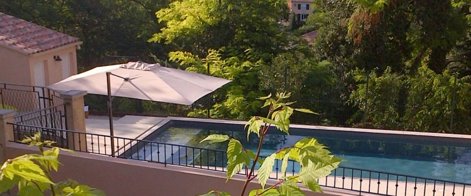
Le gîte se compose de plusieurs bâtiments reliés et disponibles selon vos besoins.
Sa configuration en fait un endroit idéal pour :
- Les familles nombreuses grâce aux nombreux couchages et une certaine indépendance pour les plus grands
- Les couples d’amis qui pourront bénéficier de leurs suites parentales tout en partageant les pièces à vivre
- Les troupes ou autres organismes professionnels qui souhaitent de nombreux couchages independants
Le jardin en restanque et la piscine privative de 11×4 m sont idéalement agencés pour les jeux des plus petits ou des coins de calme pour les adultes.
1- la maison avec 1 grande salle de séjour et 2 chambres (dont une avec 1 lit superposé et 2 lit en mezzanine), 1 salle de bain,1 cuisine équipée
2- l’annexe donnant sur l’extérieur, de 2 chambres parentales ayant chacune une chambre attenante idéale pour 1 ou 2 enfants. Ces 2 chambres ont chacune leur accès à une salle de bain commune.
3- un studio en contrebas (avec sa terrasse).
La Maison
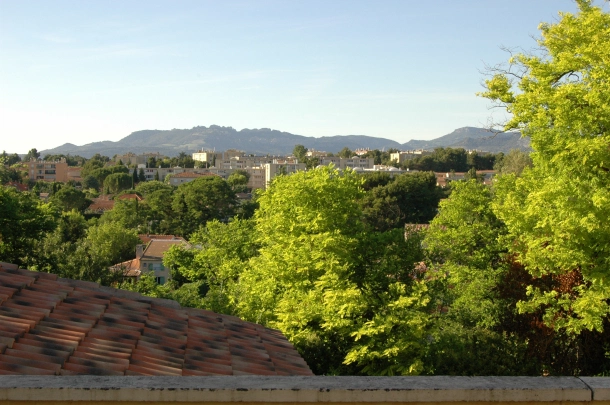
Les Dentelles de Montmirail, depuis la terrasse du gîte, où vous buvez l’apéritif
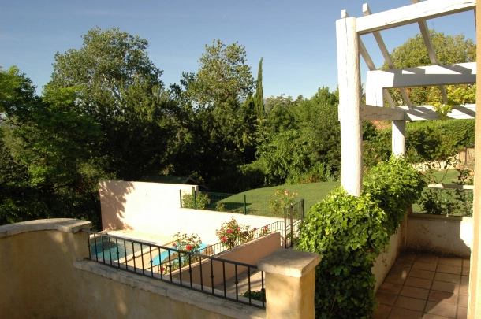
Une vue du jardin à partir de la terrasse de la Maison
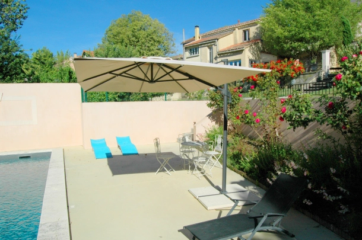
Vue partielle de la terrasse de la piscine
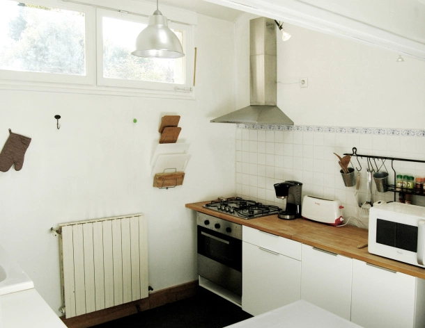
Vue partielle de la cuisine
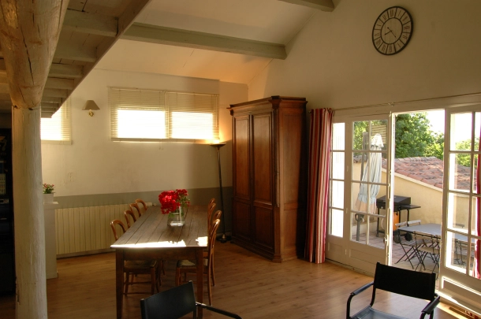
Une petite partie de la salle séjour, ouvrant sur la terrasse avec sa plancha 2 feux
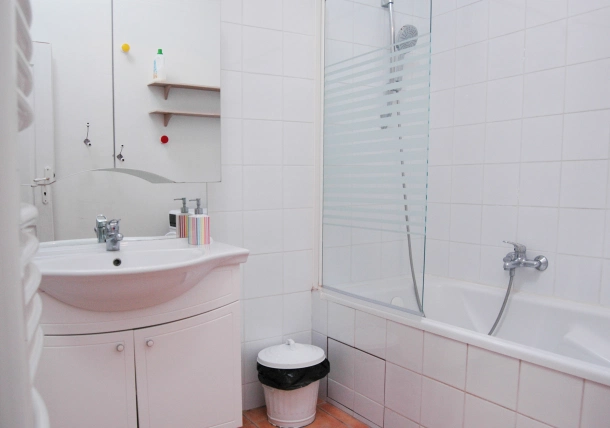
Salle de bain de la Maison
La maison constitue la partie maîtresse du gîte qui a été aménagé pour recevoir de grandes familles, des couples avec enfants, ou des groupes de type troupe de théâtre, etc.
Avec sa terrasse donnant sur la piscine , elle offre une vue magnifique au lever et au coucher du soleil, et est bien protégée de la chaleur du jour.
D’une surface de 90 m2, elle comprend :
- un grand salon/salle à manger avec de beaux volumes et pouvant accueillir 12 personnes à table.
- une cuisine équipée : lave vaisselle, four, four micro onde, congélateur, cafetière, réfrigérateur avec congélateur, etc.
- une salle de bain avec baignoire. Une précision qui a son importance quand on est nombreux : l’eau chaude est fournie en permanence, et n’est pas limitée par la taille d’un ballon.
- 1 chambre parentale avec lit double pouvant être séparé en 2 lits simples.
- 1 chambre pour enfants avec 1 lit superposé (2 couchages), 1 lit simple , une mezzanine comprenant 2 couchages.
- 1 entrée, avec 1 sèche linge et 1 frigidaire supplémentaire
L’ accès au gite se fait par une « ruelle » privative directement en bas du grand escalier d’arrivée.
La surface total du gîte est portée à 150 m2 en comprenant l’annexe et le studio.
En option peuvent être fournis, avec supplément, le ménage de sortie de la période louée, la location de draps et celle de paires de linge de toilette.
L'annexe
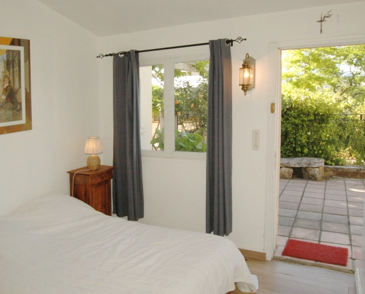
Une des chambres de l’annexe
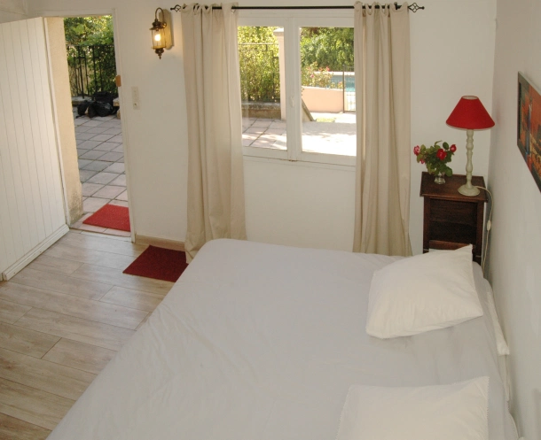
Une des chambres de l’annexe
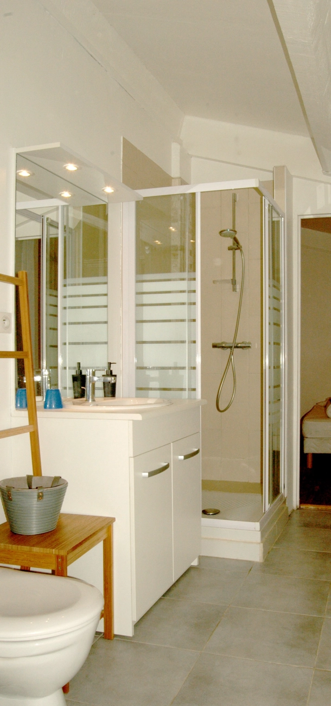
Salle d’eau de l’annexe
L’annexe est constituée de 4 chambres décomposées en 2 Chambres indépendantes avec chacune son araire-chambre, l’ensemble ouvrant directement sur une terrasse.
Chaque chambre double possède sa chambre pour enfant attenante avec 1 couchage (dont 1 lit superposé pour l’une).
Avec leur porte donnant sur la terrasse , elles offrent un accès indépendant permettant à une famille ou un couple d’avoir son espace propre.
Les Annexes disposent d’une salle d’eau, avec WC, commune.
Le studio
Idéalement situé en contrebas du terrain, et d’une surface de 17 m2, le studio inclut un lit double , une salle d’eau et un WC séparés, ainsi que d’ une mezzanine pouvant accueillir un couchage d’appoint
Sa petite terrasse qui surplombant la piscine fait du studio un endroit idéal pour des adolescents en quête d’indépendance ou un couple souhaitant de l’autonomie.

Vue du studio en contrebas de la Maison et surplombant la piscine
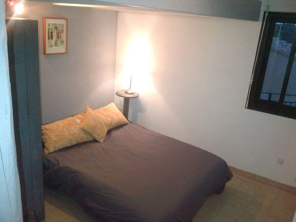
Chambre du studio